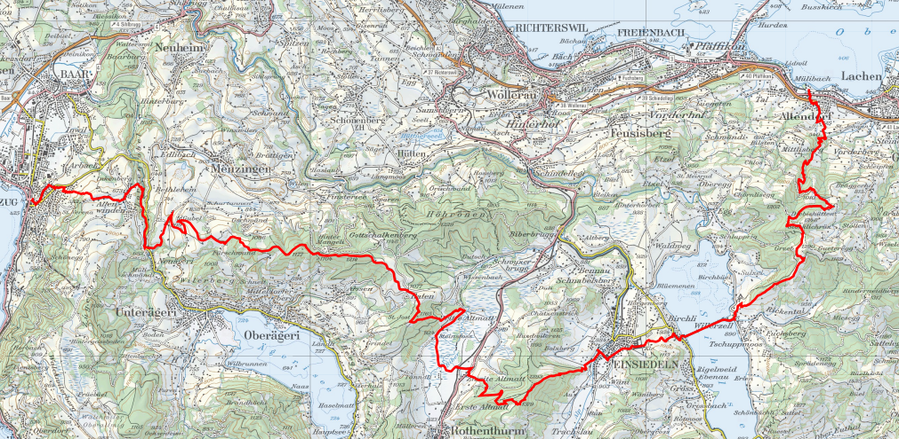
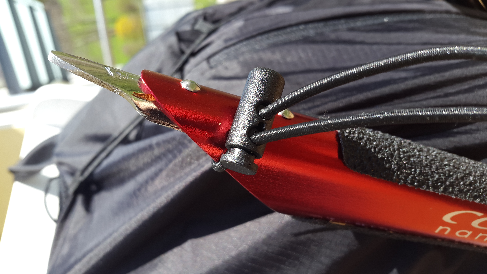
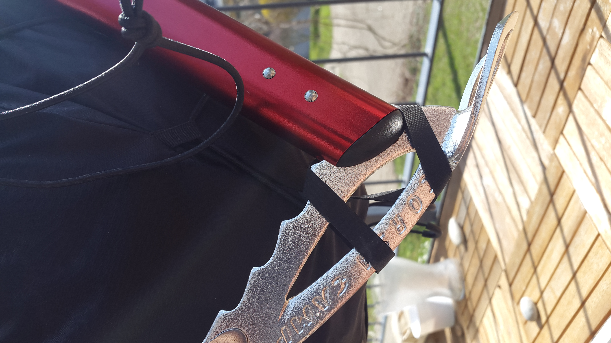
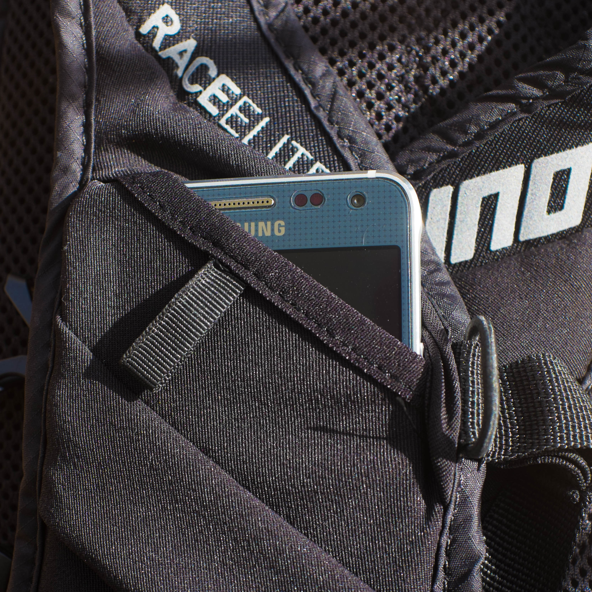
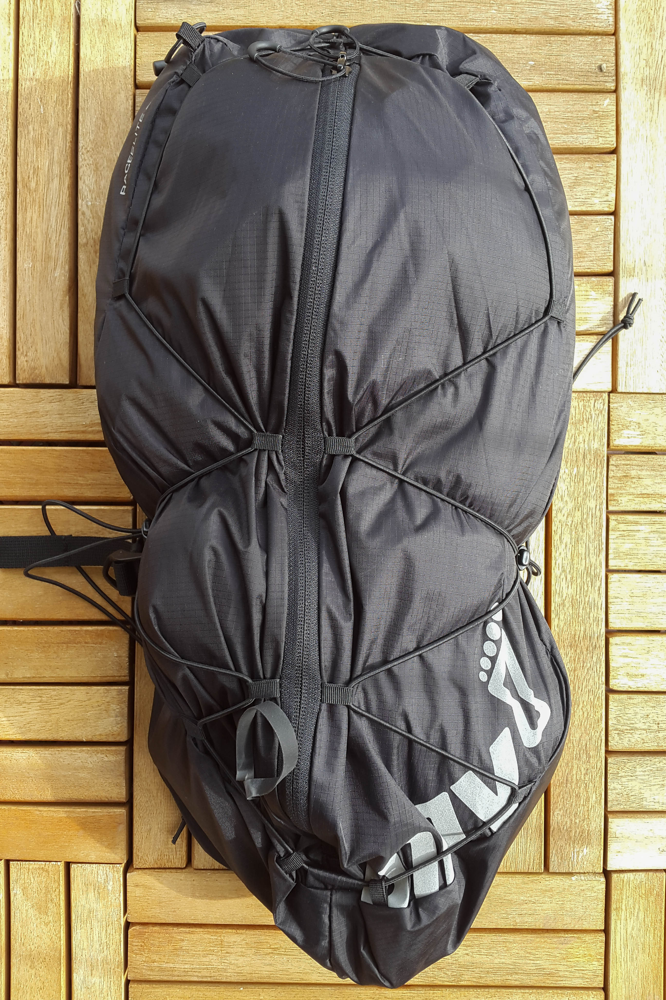
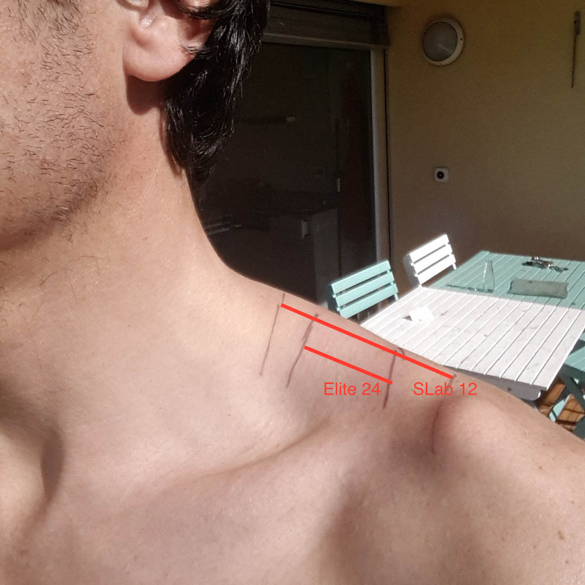

Review: Inov-8 Race Elite 24 SS15
In a couple of weeks, I prepare myself to run the GR20 - the mythical crossing of Corsica along the water separation line. It runs for 180km and 17000m ascent. The typical hiking schedule is 15 days, and trail runners do it in 5 days. While it is not a huge distance by today's standards, what is a bit unique is that the official hiking season is June to September and I aim to do it end of April - thus requiring light mountaineering equipment.
There comes the Inov Race Elite 24L running pack, as it will allow me to carry a bit more equipment than the 12L is usually use for ultras. Here is what I need to fit into it:
- standard ultra (eg.UTMB) equipment, with base / warm / waterpoof layers
- an ice axe; I chose the Camp Corsa Nanotech
- strong 3-section poles with now gaskets
- crampons compatible with running shoes; Camp Ice Master
- a puffy, went with the Arc'teryx Cerium LT Hoody
- volume for "normal food", I need a bit more space for chips and bread as I have absolutly no intention to feed on gels or energy bars and skip the delicious corse "charcuterie"
What do you get exactly ?
You have two versions of Inov-8 24l running vest / backpack: 2011 and 2015. What can be confusing is that they have the same name, and - at time of writting - a google search will actually point you to the wrong version of the bag on inov-8 website:
- First result in google search: Race Elite 24l 2011
- Latest version: Race Elite 24l 2015
So what you want is the 2015 version, altough the 2011 is still a very good bag and can be had at a good price.
The other confusing part is that the bag is labelled as coming with a "500ml bottle", but it is actually a soft flask. You can buy an extra one, and it will be - rightfully this one - called a soft flask and not a bottle.
Finally, you might see some pictures on the web where the flasks come with drinking tubes. I did not got them either in the stock one, or the extra I bought. They actually come with the new Race Ultra vest, but not the Race Elite (altough they both share the same front design). Is it an issue ? Probably not, as I have been able to drink on the go even without the extra tube.
The feature list as described on the official documentation is as follow:
- Large weather resistant zipped pocket to rear
- ‘ON-THE-FLY’ bungee compression
- One 500ml Softflask
- Two large zipped mesh pockets to front double as bottle holders
- Two large mesh pockets to front top
- Two smaller stretch mesh pockets to front top
- Whistle
- Two compression straps each side and two front straps
A few things are worth noting:
- The zipped pocket to rear has two zip closer, you can thus decide to close the bag at the top or the bottom
- the bag is bladder-compatible: there is a velcro hook at the top, and an opening in the rear for the tube
- there is a small zip pocket inside the bag for keys, credit cards, etc.
- the chest straps are mounted on elastic bands, thus allowing you to breath such as a good running vest should.
- the build is slightly water-resistant, it is not a dry bag but will resist better to most alternatives which are mesh-based
- the chest pockets have elastic bands inside to hold the bottles
Since these features are not well documented and it was a happy surprise for me when I received the bag, I thought I should mention them :-)

On the run
For the test run, I picked a 45k / +1700m route in a hilly landscape - hovering around 1000m.

The bag was loaded with the full light-mountainering equipement, with a total of 3.5kg without food and water:

The inside of the bag is black, so it can make finding items a bit harder - especially with the current fashion among ultra-runners (as opposed to road runners) to wear a lot of black. Wish the inside was white or at least some clear color :-)
My ice axe is probably the smallest out there (50cm), but still I was *just* able to hook it up and bottom. A couple of cm shorter and it would not have worked:

My Samsung Alpha is not the biggest phone, and thanksfully I was able to store it in the upper front pocket:

I feel it is necessary to have the phone as easily accessible as possible front a safety standpoint, and Inov-8 Race Ultra is my only bag giving me the option to get the phone without removing the bag (would I fall in a hole or have only one hand available to pick it up). The iPhone 6 has a couple of mm more in width and lenght, but it might be able to fit as well. A Samsung S4 or S5 certainly not.
And off we go :-)
The bag is pretty narrow and fits well the middle of the back, thus giving a very good balance. Since the bag is long, load spreads evenly in a relatively thin layer and keeping things close to the body. While my load could have fit in a smaller 17L bag I have, I felt the 24L provided much better weight distribution.
An ingenious design decision is that you tie up the bottom more than the top, thus keeping the load slightly up and avoid pressure on your lombar:

Bravo !! After you have filled your bag, you just need to hold it upside-down so as much of it "falls to the top" and tie-up the bungee cord.
Thanks to the vest design, absolutly no problem to rush down technical single trails. That was my first complain with other bags, including the well-regarded WAA Ultra 20l. Altough they are fine at moderate speed (eg. 6min /k) on gentle terrain, you are quickly faced with a dilemna: keep them loose and they wobble, or tie them up around the waist but it becomes hard to breath. No such thing with the Inov-8 Ultra vest, everything stays very comfortable and you don't need to adjust the straps.
Now comes the flip-side: without a belt, you cannot move the load - everything is on the shoulders. The problem is made a little worse by the fact that the shoulder straps are not as wide as other vest designs. See the comparaison with the Salomon S-Lab 12; inner lines are drawn from the Inov-8, the outer ones from the Salomon:

You can see they are about half the size, and given the extra load you would use for a larger bag it means about 3-4 times more pressure (load per surface area). While I think the bag could be a little more comfortable with wider straps, at the end the 4kg were sustainable for the entire day the run lasted.
The bottles fit good close to the body, under the ribs - a very good position compared to higher options (chest level). The good news is that it is possible to drink on the go and keeping the flask in the pocket, even without the tubes. While not totally comfortable, it is still more convenient than having to remove the flask in-and-out. I can see how it may vary depending of the size of people - but unfortunatly it seems not possible to get separatly the tubes as seen on the Inov-8 Race Ultra range.
Another option is to use this other type of flask - also made by Hydrapack; while not obvious on the photo, it has a couple extra cm and that just made the difference from "ok" to "good" (not yet "great") for me:
Refilling the flasks at the springs found along the way was easy, much easier than a back bladder - and they help balance the weight in front. The front pockets have an additional strap to secure the flasks and make sure they don't jump-out, but I have not find necessary to use them - which is good, one less step.
Nutrition on the go was a bit more of problem. While the bag has smaller front pockets on top, they can hold pretty nicely a couple of gels or energy bars. However I like to keep this kind of food for really the end of the day as much as possible, such as small bites of a sandwich or nuts & dry fruits put in a bag:
I would ususally put it in a dump mesh pocket on the side but, at the opposite of the Race Ultra, the Race Elite do not have these. Inov-8 has a an accessory front mesh pocket on catalog, but it is not compatible with the Elite. It would be really great to have some accessory mesh side pocket, the presence of the current adjustable side traps could open the door to such option. I can see them very useful to store food as described above, but also quick changing equipement such as a camera, arm warmers, hat, gloves or map. Beside accessibility, it would help also to transfer some of the weight onto the waist.
With all that said, if you are happy with gels and bars - then you would have no issue with nutrition on this bag. Personally, I often use 3/4 climbing pants for my running and they have the advantage to have large pockets into which I can store food.
Conclusion
- A very comfortable bag, even if you don't need the full 24L you will appreciate it for content of 15L and more
- A quite unique item, with very little competition given its capacity and weight; ice-axe compatible is a big plus
- A reasonnable price given the well-thought design and quality of craftmanship
- Sturdy design, made for real adventures; it is in-between your typical mesh-based running bag and competition ski touring items
- It has not side dump pockets, so think it that may affect your setup a lot
- in my mind, the hydration system could be improved a little by either providing drinking tubes or allow the flasks to seat higher up.
- by Ian Corless
- by Joe Grant
Some other cool reviews you'll find interesting: